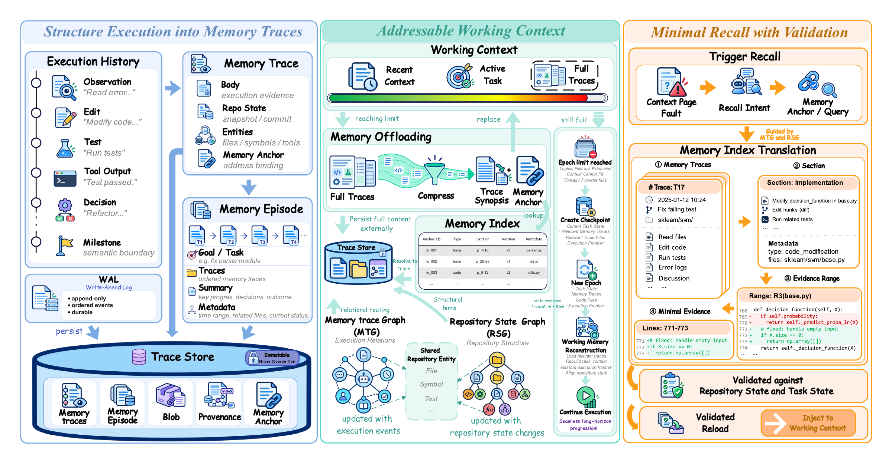

Enlarge放大MemTrace: State-Consistent Memory for Long-Horizon Coding Agents
Keeping memory useful as code changes. MemTrace connects immutable execution traces with the current repository state, checking historical evidence before reuse. Evaluated on three software-engineering benchmarks and two coding-agent harnesses.
让记忆随代码演化保持有效。MemTrace 将不可变的执行轨迹与当前仓库状态关联，在复用历史证据前检查其有效性，并在三个软件工程基准、两种代码智能体框架上进行评测。
My contribution我的贡献
Led the design and development of the state-consistent memory system, including structured execution traces, repository grounding, and evaluation against native memory strategies.
主导状态一致性记忆系统的设计与开发，包括结构化执行轨迹、仓库状态关联，以及与原生记忆策略的对照评测。